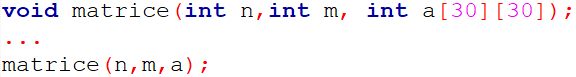

Subprogramele, sau funcţiile, în C++ sunt de două tipuri:
Tipul subprogramului este specificat în antet.
Funcţiile pot facilita scrierea algoritmilor, întrucât pot fi apelate de mai multe ori în acelaşi program.
Tablourile au un comportament special în ceea ce privește transferul parametrilor. Mai precis: tablourile se transmit prin valoare, dar orice modificare a valorilor elementelor tabloului dat ca parametru formal va afecta elementul corespunzător al tabloului dat ca parametru actual.
Pentru un tablou bidimensional, regula este că prima dimensiune a parametrului nu trebuie să fie în concordanță cu cea a parametrului actual. Toate celelalte dimensiuni ale parametrului formal trebuie să fie identice cu dimensiunile corespunzătoare ale parametrului actual. Adică, este obligatoriu să precizăm în antetul funcţiei dimensiunea maximă pentru numărul de coloane al matricei.
sau
Cele două subprograme sunt echivalente.
Un subprogram este o colecție de tipuri de date, variabile, instrucțiuni care îndeplinesc o anumită sarcină (calcule, citiri, afișări), atunci când este apelat (folosit) de un program sau de un alt subprogram.